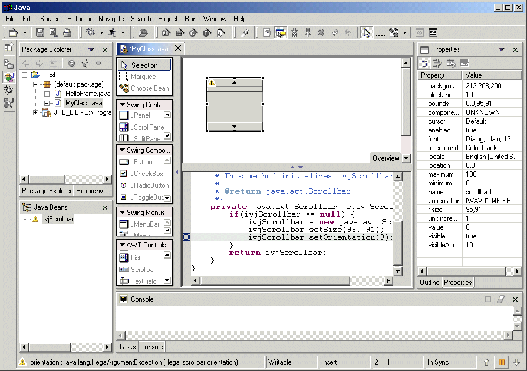

The source code style currently used by the Visual Editor for Java TM is based upon the style generated by VisualAge R for Java. When the .java file is opened, a model of the Java beans, their initial property values, and any relationships between them are created.
To determine the Java beans that appear in the Visual Editor's canvas and Java Beans viewer, each field is analyzed to see whether or not it should be included. To be recognized as a Java bean the following rules must be satisfied:
Fields that start with ivjConn are not treated as Java beans. If you wish to make all Java beans, including visual classes, to be only included if their field name begins with ivj, you can specify this using Window > Preferences > Java > Visual Editor.
Change the value of the checkbox Require prefix of 'ivj' for Swing/AWT Component names.
To illustrate the rules for inclusion of Java beans, the following fields are recognized as candidate Java beans.
private javax.swing.JPanel ivjJPanel; private javax.swing.JButton anOKButton; private javax.swing.table.TableModel ivjTableModel;
If ivjTableModel was named differently without beginning ivj it would not be included in the list of Visual Editor Java beans, however anOKButton is included because the class javax.swing.JButton is a descendent of java.awt.Component and it is therefore a visual Java bean.
As well as having the correct field name, each field must be instantiated within a get method. The getPanel() method sets the field ivjJPanel to be an instance of javax.swing.JPanel so ivjJPanel has satisfied the rules to be recognized as Java bean by the Visual Editor.
private javax.swing.JPanel getJPanel(){
if ( ivjJPanel == null ) {
ivjJPanel = new javax.swing.JPanel();
ivjJPanel.setBackground(java.awt.Color.cyan);
}
}
Although the Visual Editor generates methods such as getPanel() that instantiate and return a single Java bean this is not a requirement. A method can instantiate more than one Java bean, and the return value of the method is not important for recognizing whether the field is a Java bean. For the fields anOKButton and ivjTableModel to be included as Java bean they will therefore need to be instantiated within a get method in the class.
Once a method has been found for the Java bean that instantiates it, then it is further analyzed for design time property settings. In getJPanel() the method ivjJPanel.setBackground(java.awt.Color.cyan) is used to determine the initial value of the background property for the Java bean shown in the canvas and the Properties view.
If the edited class extends a Java bean, the instance being edited is represented with a special Java bean called a 'this' part. The 'this' part cannot be deleted from the Design view or Java Beans view, and the initialization method for its properties are done in the initialize() method. A 'this' part is only shown in the Design view and Java Beans view if there are any properties that would be available to set on the Properties view. The set methods for the properties are generated in the initialize() method or if the class extends java.awt.Applet the init() method is used.
When the arguments to a property's set method are parsed, such as the "Hello_World_1" String argument to the setTitle method, the Visual Editor will attempt to construct a Java bean for the property value. Most expressions will be successfully parsed, however not all expressions can be correctly evaluated. In this case a warning sign will be shown against the Java bean in the views and the reason for the failure will be shown in the status line.

The following set of rules must be met for an expression to be successfully parsed by the Visual Editor:
When a set method is parsed it is only applied to the Java bean if it is a set method that is associated with a java.beans.PropertyDescriptor.